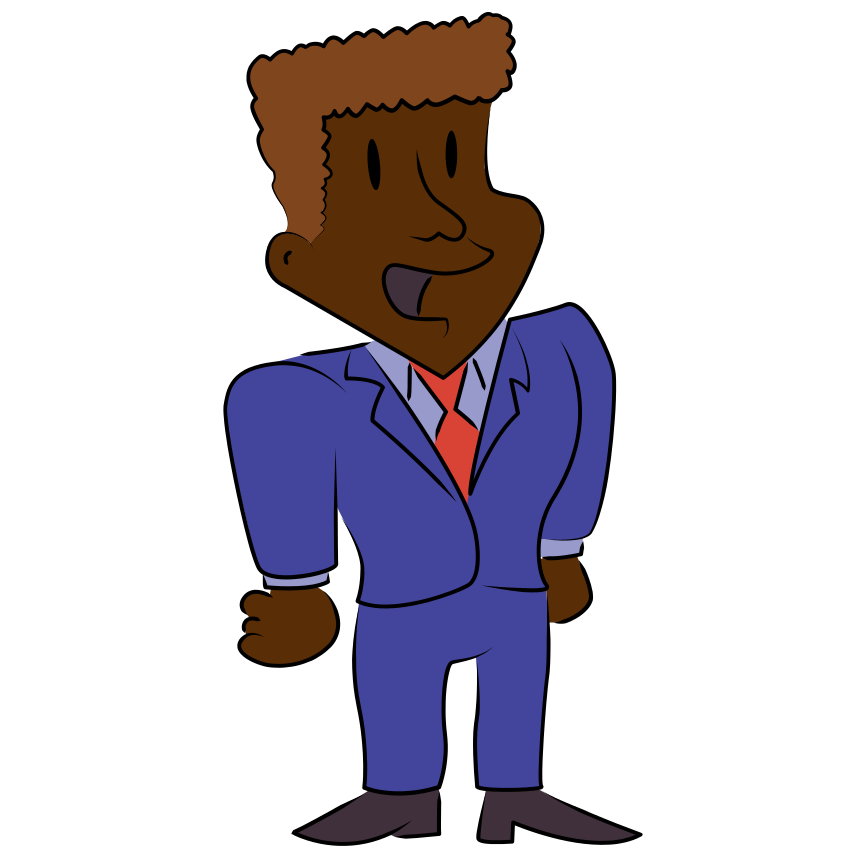
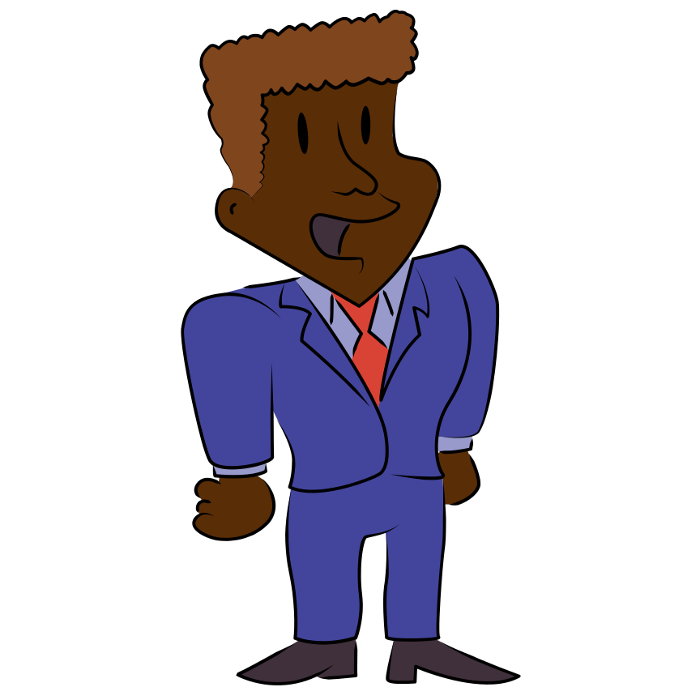

Of course! First, define the nature of the issue or problem. Then, brainstorm possible solutions to the problem. Then, select possible solutions and identify the positives/negatives of each. Next, select a solution and defend your selection by citing evidence and define your reasoning. Finally, form conclusions, judgments, or inferences from facts or other info.